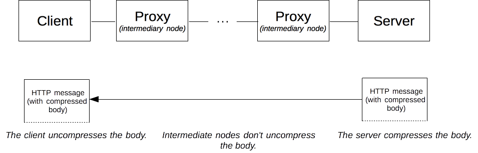
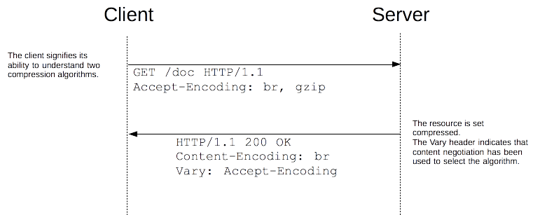
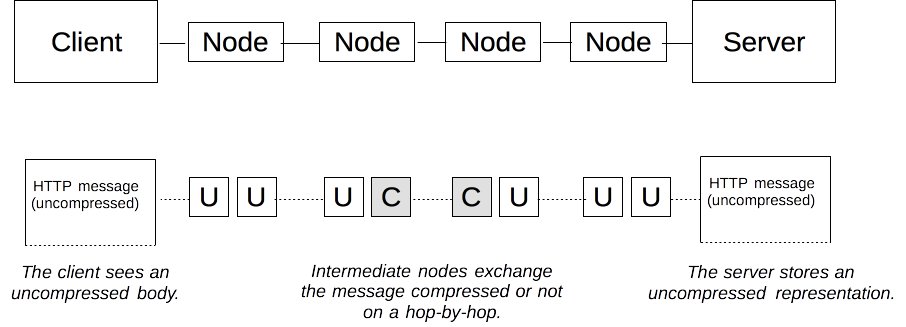
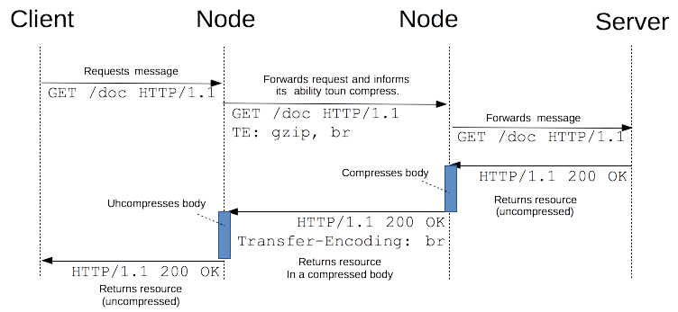

{{HTTPSidebar}}
Compression is an important way to increase the performance of a Web site. For some documents, size reduction can reach 70%, lowering the bandwidth needs. Over the years, algorithms got more efficient, and new ones are supported by clients and servers.
Web developers doesn't need to implement compression, both browsers and servers have it implemented. They have to be sure that the server is adequately configured though. Compression happen at three different levels: first some file format are compressed with specific optimized methods, then general encryption can happen at the HTTP level (the resource is transmitted compressed from end to end, and finally compression can be defined at the connection level, between two nodes of an HTTP connection.
File format compression
Each type of data has some redundancy, that is wasted space, in it. If text can typically have as much as 60% redundancy, this rate can be much higher for some other media like audio and video. Unlike text, these other media are taking a lot of space to store and the need to regain this wasted space appeared very early. Engineers designed optimized compression algorithm used by file formats designed for specific purpose. Compression algorithms used for files can be grouped in two wide categories:
- Loss-less compression, where the compression-uncompression cycle doesn't alter the data that is recovered matches exactly, byte to byte, the original.
For images,giforpngare loss-less compression. - Lossy compression, where the cycle alter the original data, in an imperceptible way for the user.
Videos format on the Web are lossy; for images,jpegis.
Some formats can be used for both loss-less or lossy compression, like webp, but usually lossy algorithm can be configured to compress more or less, and of course to lose less or more quality. It is important on a Web site to compress as much as possible, while keeping an acceptable level of quality in the usage. For images, an image generated by a tool could be not optimized enough for the Web; it is recommended to use tools that will compress as much as possible with the required quality. There are numerous tools that specialized for this, and they can be added to your toolchain.
Lossy compression algorithms are usually more efficient that loss-less ones.
As compression works better on a specific kind of files, it usually provides nothing to compress them a second time. In fact, this is often counter productive as the cost of the overhead (algorithms usually need a dictionary that add to the initial size) can be higher than the extra gain in compression resulting in a larger file. Do not use one of the two following techniques for files in a compressed format.
End-to-end compression
For compression, end-to-end compression is where the largest improvement of performance of a Web site resides. If the choice of a compressed format is usually pretty automatic and only optimization of the algorithm used by them can be performed, end-to-end compression are often not configured properly.
End-to-end compression refers to a compression of the body of a message that is done by the server and will last unchanged until it reached the client. Whatever the intermediate nodes are, they leave the body untouched.

All modern browsers and servers do support it and the only thing to negotiate is the compression algorithm to use. These algorithm are optimized for text. In the 1990s, compression technology was advancing at a rapid pace and numerous successive algorithms have been added to the set of possible choices. Nowadays, only two are relevant: gzip, the most common one, and br the new challenger.
To select the algorithm to use, browser and server use proactive content negotiation. The browser send an {{HTTPHeader("Accept-Encoding")}} header with the algorithm it supports and its order of precedence, the server pick one, use it to compress the body of the response and use the {{HTTPHeader("Content-Encoding")}} header to tell the browser the algorithm it chose. As content negotiation has been used to chose a representation based on its encoding, a {{HTTPHeader("Vary")}} header containing at least {{HTTPHeader("Content-Encoding")}} must be sent alongside this header in the response; that way, cache will be able to cache the different representations of the resource.

As compression brings significant performance improvements, it is recommended to activate it for all files, but already compressed ones like images, audio files and videos.
For configuring Apache to support compression uses mod_deflate; for nginx, uses ngx_http_gzip_module; for IIS, the <httpCompression> element.
Hop-by-hop compression
Hop-by-hop compression, though similar to end-to-end compression, differs by one fundamental element: the compression doesn't happen on the resource in the server, creating a specific representation that is then transmitted, but on the body of the message between any two nodes on the path between the client and the server. Connections between successive intermediate nodes may apply a different compression.

To do this, HTTP uses a mechanism similar to the content negotiation for end-to-end compression: the node transmitting the request advertize its will using the {{HTTPHeader("TE")}} and the other node chooses the adequate method, applies it, and indicates its choice with the {{HTTPHeader("Transfer-Encoding")}} request.

In practice, hop-by-hop compression is transparent for the server and the client, and is rarely used. {{HTTPHeader("TE")}} and {{HTTPHeader("Transfer-Encoding")}} are mostly used to send a response by chunks, allowing to start transmitting a resource without knowing its length.
Note that using {{HTTPHeader("Transfer-Encoding")}} and compression at the hop level is so rare that most servers, like Apache, nginx, or IIS, have no easy way to configure it. Such configuration usually happen at the proxy level.